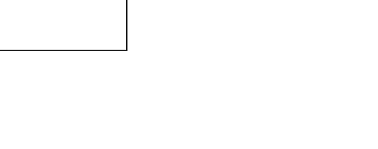

Windows · C


View source
#include <windows.h>
int WINAPI WinMain(HINSTANCE instance, HINSTANCE previous, LPSTR command, int show)
{
MessageBoxA(NULL, "Hello from a native Windows application!", "BranchVista Windows", MB_OK);
return 0;
}